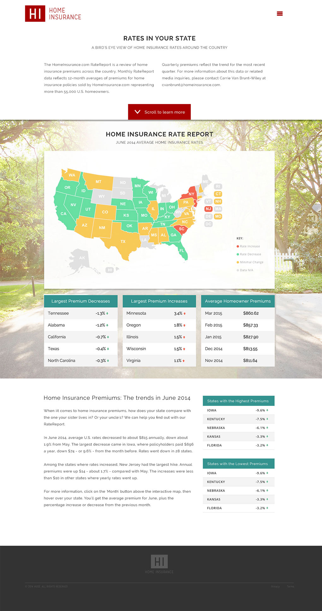

One of the biggest issues with the previous design of this site was its lack of character. The imagery was quite dull and the color palette lacked any real unity. The most dominant color on the site was white, which made the site clean but also made it feel a little too sterile. Nothing about the previous design evoked any emotion or engaged the user in any way.
From an SEO perspective, this was one of the site's most important pages. Users came to it to get rate information from the map. So, obviously, the map needed to be front and center. However, I wanted to have a couple of paragraphs to introduce the user to what they were seeing.
